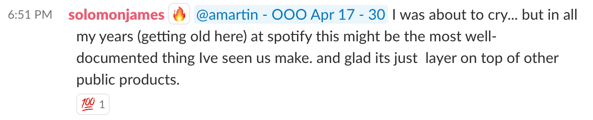
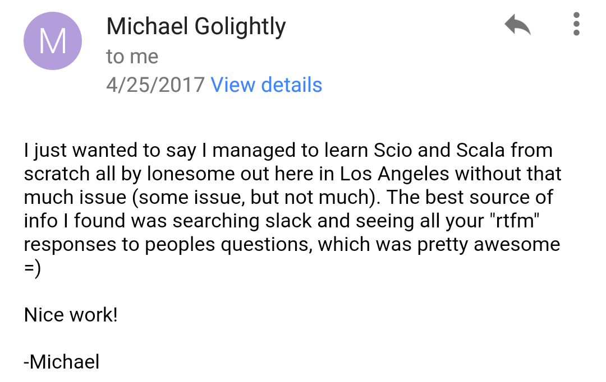
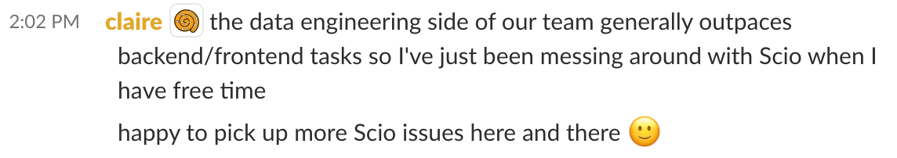

class: center, middle # flatMap ## OSS Infra at Scale Neville Li --- class: center, middle # Disclaimer ## The topic of process is inherently flamey ## None of this possible w/o everyone who works on data/ML --- class: center, middle <img src="flatmap.jpg" alt="flatmap" style="width: 80%;"/> --- # History - ## Mar 2016 - formation, Neville, Rav and Andrew + Nitzan/Josh (PM)<br/> ### Scio, Ratatool, Luigi, ... - data pipelines, quality, GCP migration - ## Aug-Oct 2017 - Fallon, Romain, Anna and Rich ### Featran, TensorFlow, XGBoost, ... - ML foundations - ## Feb-Mar 2018 - Regadas and Julien ### Zoltar, Noether, ML paved road, ... - E2E ML, model serving, metrics, shared repo --- # 3 devs in 18 months - ## Scio - _Rogue One_ → _golden path_ (even Google) - ## From ~20 → 300+ users in #scala - ## 0 → 1300+ production pipelines - ## 100+ external users on Gitter and various Slack orgs \# Most with no or little Scala or big data experience \# New language, paradigm, libraries and workflow --- class: center, middle ## _If it was possible to have a crush on a programming language,_ ## _I would have a crush on scio and scala because it’s so awesome._ ### - anonymous data scientist --- # 20+ GitHub repos - #### scio - 18 sub-projects, 1000+ total issues and PRs - #### featran - 9 sub-projects - #### ratatool, zoltar, noether - #### scio-idea-lugin, scio.g8, scala-luigi, scio-cookie - #### spotify-tensorflow, tfimage - #### gcs-tools, big-data-rosetta-code - #### shapeless-datatype, parquet-avro-extra, protobuf-generic, xgboost-dist - #### tf-paved-road, xgboost-paved-road, ml-paved-road, das-repo - #### spark-bigquery, hype, limbo, ... --- # Repo LOC .left-column[ - #### scio - 18 sub-projects, 100K - #### featran - 9 sub-projects, 13K - #### ratatool - 8K ] .right-column[ - #### luigi (python) - 112K - #### helios (java) - 116K - #### styx (java) - 55K - #### apollo (java) - 48K - #### spydra (java) - 9K ] --- # GitHub commits and ranking among Spotifiers - ## Neville - 1935, #1 - ## Rav - 394, #12 - ## Andrew - 136, #36 \# As of Apr 23, 2018, excluding GHE commits --- # Upstream contributions - ## Apache Beam - Neville 12+, Rav 13+, Andrew 3+ - ## algebird, chill, breeze, scalding, spark, zeppelin, parquet - ## kryo, sbt\*, bazel\* --- # A Lot of Experimental Work - ### Type macros and IntelliJ plugin - ### Type level programming - ### Property based testing, 100% coverage - ### Micro-benchmark, Java ASM, JNI - ### ClassLoader and REPL - ### Scala compiler, standard lib and JVM issues - ### Build tools --- # Education - ## scio wiki - ~15K words - ## big-data-rosetta-code - ~3K LOC - ## 5 rounds data university, 2 devs almost 100% each time - ## 20+ blog posts, slide decks and tech-talks - ## #monaditos - _the real scala channel_ --- # Our roles - ## Build tools to let users focus on business problem - ## Be the experts in the tools our users need - ## Educate users on new programming paradigm and best practices ## 33% building, 33% learning, 33% education \# and 1% Poutine Hockey Poutine™ --- # Building and learning - # Minimal process restraint - # Find the right problems to solve - # Be a part of the ecosystem --- # Minimal process restraint - ## Highly experimental work, uncertainty and risks - ## Hard to plan exact task breakdown - ## Instead plan general direction - ## Trust teammates to grow and do the right thing --- # Find the right problems to solve - ## ... with the largest impact - ## ... once for everyone - ## ... that users shouldn't have to deal with - ## Not afraid to tackle problems we don't know how to - ## Embrace failures --- class: center, middle <img src="scala.png" alt="scala" style="width: 60%;"/> --- # Be part of the ecosystem - ## Report bugs to anything that affects us - ## Contribute fixes and enhancements whenever possible - ## Leverage the community to maintain our code and docs - ## Learning the ecosystem helps us better support our users --- # Support guidelines - ## Document everything - ## Async, eletronic communication - ## Guidance not answers - ## Empower users, build community - ## _Embed libre_, not _embed gratis_ --- # Document everything - ## ScalaDoc site, GitHub wiki - ## Annotated example code → site (compiler plugin) - ## Any question asked twice goes into FAQ - ## One confluence page with everything - ## Hyperlink all pages for SEO --- class: center, middle  --- # Async, eletronic communication - ## Avoid face to face, @me and DMs - ## Prefer public async channels, e.g. Slack and GitHub issues - ## Visible to the community both for learning and leveraging help - ## Searcheable archive - ## Multi-tasking and minimize interruption --- # Guidance not answers - ## We help users grow expertise, not solve problems for them - ## Avoid direct answers to newbie questions - ## Identify questions that require genuine help or those due to "laziness" - ## Provide pointers, suggestions, links to code & docs, etc. --- class: center, middle  --- # Empower users - ## Ask for GH issues, stacktrace or repro snippet - ## Point to troubleshoot guide and give feedback - ## Ask for PRs for trivial fixes --- class: center, middle <img src="psobot.png" alt="psobot" style="width: 80%;"/> --- # Build community - ## Leverage power users - ## Knowledge sharing - ## Community based support - ## Open discussion for big feature requests, fixes, etc. - ## #scala is a community not support channel --- # Contributors - ## Scio - 53 total, 17 DI, 17 non-DI - ## scio-cookie - 38 total, 16 non-DI - ## scala-luigi - 33 total, 16 non-DI - ## Mostly community - scio-bigtable, xgboost, spark-bigquery --- class: center, middle  <img src="guidj.png" alt="guidj" style="width: 40%;"/> <img src="jpv.png" alt="jpv" style="width: 40%;"/> --- # Embed libre, not embed gratis - ## _Embed considered harmful_ - ## Time consuming, not reproducible, not scalable - ## Sometimes useful when working with power users - ## Learn from each other, explore uncharted grounds - ## Avoid embed as offering free work --- class: center, middle # The End